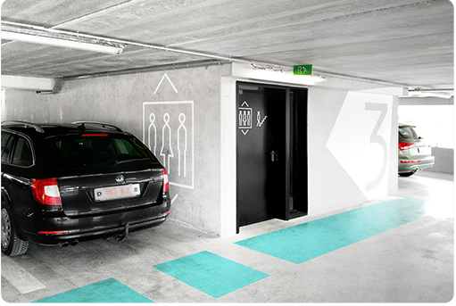
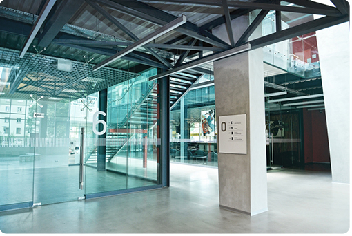

随着互联网时代的到来以及快速发展，互联网在各行各业的发展中发挥了强大的推力。2005年以后，互联网进入Web2.0时代， 各种类似桌面软件的Web应用大量涌现，网站的前端由此发生了翻天覆地的变化。网页不再只是承载单一的文字和图片， 各种丰富媒体让网页的内容更加生动，网页上软件化的交互形式为用户提供了更好的使用体验。
随着互联网时代的到来以及快速发展，互联网在各行各业的发展中发挥了强大的推力。2005年以后，互联网进入Web2.0时代，各种类似桌面软件的Web应用大量涌现，网站的前端由此发生了翻天覆地的变化。网页不再只是承载单一的文字和图片，各种丰富媒体让网页的内容更加生动，网页上软件化的交互形式为用户提供了更好的使用体验。传统网站的动画效果以及音频视频的播放基于flash制作，而如今随着前端技术的发展，css3 、h5等技术取代了传统的flash，进而是网站的性能得到优化。而基于JavaScript的3D技术的发展更是给网站用户带来了不一样的视觉浏览体验。当然，其带来的不单单是视觉上的享受，更有实质性的应用。在游戏制作，场景模拟等方面已经有了很广泛的应用。 随着互联网时代的到来以及快速发展，互联网在各行各业的发展中发挥了强大的推力。2005年以后，互联网进入Web2.0时代，各种类似桌面软件的Web应用大量涌现，网站的前端由此发生了翻天覆地的变化。网页不再只是承载单一的文字和图片，各种丰富媒体让网页的内容更加生动，网页上软件化的交互形式为用户提供了更好的使用体验。传统网站的动画效果以及音频视频的播放基于flash制作，而如今随着前端技术的发展，css3 、h5等技术取代了传统的flash，进而是网站的性能得到优化。而基于JavaScript的3D技术的发展更是给网站用户带来了不一样的视觉浏览体验。当然，其带来的不单单是视觉上的享受，更有实质性的应用。在游戏制作，场景模拟等方面已经有了很广泛的应用。随着互联网时代的到来以及快速发展，互联网在各行各业的发展中发挥了强大的推力。2005年以后，互联网进入Web2.0时代，各种类似桌面软件的Web应用大量涌现，网站的前端由此发生了翻天覆地的变化。网页不再只是承载单一的文字和图片，各种丰富媒体让网页的内容更加生动，网页上软件化的交互形式为用户提供了更好的使用体验。传统网站的动画效果以及音频视频的播放基于flash制作，而如今随着前端技术的发展，css3 、h5等技术取代了传统的flash，进而是网站的性能得到优化。而基于JavaScript的3D技术的发展更是给网站用户带来了不一样的视觉浏览体验。当然，其带来的不单单是视觉上的享受，更有实质性的应用。在游戏制作，场景模拟等方面已经有了很广泛的应用。
随着互联网时代的到来以及快速发展，互联网在各行各业的发展中发挥了强大的推力。2005年以后，互联网进入Web2.0时代，各种类似桌面软件的Web应用大量涌现，网站的前端由此发生了翻天覆地的变化。网页不再只是承载单一的文字和图片，各种丰富媒体让网页的内容更加生动，网页上软件化的交互形式为用户提供了更好的使用体验。传统网站的动画效果以及音频视频的播放基于flash制作，而如今随着前端技术的发展，css3 、h5等技术取代了传统的flash，进而是网站的性能得到优化。而基于JavaScript的3D技术的发展更是给网站用户带来了不一样的视觉浏览体验。当然，其带来的不单单是视觉上的享受，更有实质性的应用。在游戏制作，场景模拟等方面已经有了很广泛的应用。 随着互联网时代的到来以及快速发展，互联网在各行各业的发展中发挥了强大的推力。2005年以后，互联网进入Web2.0时代，各种类似桌面软件的Web应用大量涌现，网站的前端由此发生了翻天覆地的变化。网页不再只是承载单一的文字和图片，各种丰富媒体让网页的内容更加生动，网页上软件化的交互形式为用户提供了更好的使用体验。传统网站的动画效果以及音频视频的播放基于flash制作，而如今随着前端技术的发展，css3 、h5等技术取代了传统的flash，进而是网站的性能得到优化。而基于JavaScript的3D技术的发展更是给网站用户带来了不一样的视觉浏览体验。当然，其带来的不单单是视觉上的享受，更有实质性的应用。在游戏制作，场景模拟等方面已经有了很广泛的应用。随着互联网时代的到来以及快速发展，互联网在各行各业的发展中发挥了强大的推力。2005年以后，互联网进入Web2.0时代，各种类似桌面软件的Web应用大量涌现，网站的前端由此发生了翻天覆地的变化。网页不再只是承载单一的文字和图片，各种丰富媒体让网页的内容更加生动，网页上软件化的交互形式为用户提供了更好的使用体验。传统网站的动画效果以及音频视频的播放基于flash制作，而如今随着前端技术的发展，css3 、h5等技术取代了传统的flash，进而是网站的性能得到优化。而基于JavaScript的3D技术的发展更是给网站用户带来了不一样的视觉浏览体验。当然，其带来的不单单是视觉上的享受，更有实质性的应用。在游戏制作，场景模拟等方面已经有了很广泛的应用。随着互联网时代的到来以及快速发展，互联网在各行各业的发展中发挥了强大的推力。2005年以后，互联网进入Web2.0时代，各种类似桌面软件的Web应用大量涌现，网站的前端由此发生了翻天覆地的变化。网页不再只是承载单一的文字和图片，各种丰富媒体让网页的内容更加生动，网页上软件化的交互形式为用户提供了更好的使用体验。传统网站的动画效果以及音频视频的播放基于flash制作，而如今随着前端技术的发展，css3 、h5等技术取代了传统的flash，进而是网站的性能得到优化。而基于JavaScript的3D技术的发展更是给网站用户带来了不一样的视觉浏览体验。当然，其带来的不单单是视觉上的享受，更有实质性的应用。在游戏制作，场景模拟等方面已经有了很广泛的应用。